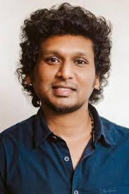

Leo2 new update

Leo
The movie Leo can refer to at least two different films released in 2023: a Tamil-language action thriller starring Vijay and an American animated musical comedy featuring the voice of Adam Sandler. Leo (2023 Indian film) This is a Tamil-language action thriller directed by Lokesh Kanagaraj and starring Vijay, Trisha, Sanjay Dutt, and Arjun Sarja.
Protogonist
The story follows Parthiban (Vijay), a mild-mannered cafe owner in Theog, Himachal Pradesh, who lives a peaceful life with his wife and two children.
Conflit;
His quiet life is upended after he single-handedly fends off a gang of thugs to protect his family. This act of violence attracts the attention of a drug cartel led by gangsters Antony Das (Sanjay Dutt) and Harold Das (Arjun Sarja).
Actor Vijay
Joseph Vijay Chandrasekhar (born in 1974), known mononymously as Vijay, is a prominent Indian actor, playback singer, and politician. In 2024, he founded the political party Tamilaga Vettri Kazhagam (TVK) and announced his impending retirement from cinema to pursue a full-time political career. Political career Vijay has actively transitioned into politics, with his party preparing for the 2026 Tamil Nadu Legislative Assembly elections. Party launch: He officially launched his political party, Tamilaga Vettri Kazhagam (TVK), on February 2, 2024. Intense campaigning: Throughout 2025, he has been conducting a state-wide political tour, holding rallies in various districts, including Tiruchi, Ariyalur, Nagappatinam, Tiruvarur, Namakkal, and Karur. Criticism of opponents: He has publicly criticized both the ruling DMK and the BJP, accusing them of corruption, hindering state progress, and having secret dealings. Platform: The TVK's platform emphasizes principles of social justice, secularism, and egalitarianism, vowing to provide a corruption-free government. Final film and retirement Last film: Vijay's 69th film, the political action thriller Jana Nayagan, will be his last as a lead actor. Production: The movie, directed by H. Vinoth, went into production in 2024 and wrapped filming in August 2025. Release: Jana Nayagan is scheduled for theatrical release in January 2026, coinciding with the Pongal festival. Retirement: Following the release of Jana Nayagan, Vijay will formally retire from his acting career to focus entirely on politics. Cinema legacy Before his pivot to politics, Vijay was known as "Thalapathy" (Commander) and was one of the highest-paid actors in Tamil cinema. Debut: He began his career as a child artist in the 1980s and made his debut as a lead actor in 1992. Commercial success: His career spans over three decades and includes numerous commercially successful and high-grossing films. Recent blockbusters: His last few films continued his legacy of success, including Master (2021), Beast (2022), Varisu (2023), Leo (2023), and The Greatest of All Time (2024). Philanthropy: Through his fan club, Vijay Makkal Iyakkam, he has also been actively involved in social service and relief efforts for many years.
Director Lokesh kanagaraj
Lokesh Kanagaraj is an Indian film director, screenwriter, and producer known for his work in Tamil cinema and for creating the "Lokesh Cinematic Universe" (LCU). His films are typically high-octane action thrillers featuring raw violence, non-linear narratives, and complex characters. Lokesh Kanagaraj - IMDb Lokesh Kanagaraj - IMDb Lokesh Kanagaraj Salutes His Team: A Tribute to Cinema's ... Career highlights Early life: Kanagaraj was a bank employee before pursuing his passion for filmmaking. He gained recognition for his short films, including Kalam in the 2016 anthology Aviyal, which was produced by director Karthik Subbaraj after he was impressed by Kanagaraj's work. Maanagaram (2017): This hyperlink thriller was his feature film debut and received critical acclaim, establishing him as a director to watch. Kaithi (2019): This action thriller, featuring Karthi, became the first installment of the LCU. It stood out for its fast-paced screenplay and lack of songs and romance. Master (2021): A major commercial success, this film starred Vijay and Vijay Sethupathi. It was one of the highest-grossing Indian films of that year. Vikram (2022): This film dramatically expanded the LCU, starring Kamal Haasan, Vijay Sethupathi, and Fahadh Faasil. It was a massive box office success and further established Kanagaraj's reputation. Leo (2023): Reuniting with Vijay, this film was another blockbuster that further deepened the LCU mythology. Cinematic style Hyperlink narrative: Many of his films, like Maanagaram and Kaithi, use interconnected and non-linear storylines to weave complex plots. Realistic action: Kanagaraj is known for keeping his action sequences grounded and raw. He often avoids using ropes during stunt work to make the sequences feel more believable. Genre and influences: While primarily an action-thriller director, Kanagaraj has cited filmmakers like Martin Scorsese and Quentin Tarantino as influences. His work also features an appreciation for retro music, a trait linked to his admiration for Tarantino. Recurring collaborators: He frequently works with a core team, including editor Philomin Raj and stunt choreographers Anbariv. Future and production company LCU expansion: Kanagaraj has revealed an ambitious plan to expand the LCU, including sequels like Kaithi 2 and Vikram 2, as well as a standalone film for the character Rolex. G Squad: In 2023, he launched his own production company, G Squad, and has since announced and produced new ventures, some of which are connected to the LCU. Planned retirement: He has stated his intention to stop directing after making 10 films. Coolie (2025): His latest project, which is not part of the LCU, stars Rajinikanth.
For official update see this video
<
Credit of this web
| CREATER;R.KANDHAVEL | PH.NO;---------- |
| FOR MORE INFORMATION CONTACT OUR KANDHAVEL|